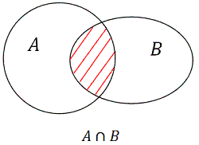
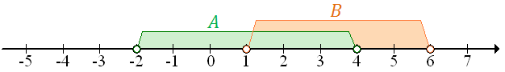
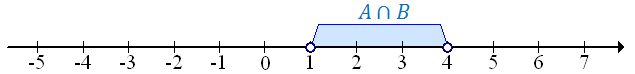

Iloczyn zbiorów \(A\) i \(B\) oznaczamy: \[A\cap B\] Graficzna ilustracja iloczynu
zbiorów \(A\cap B\):  Do iloczynu \(A \cap B\) zaliczamy wszystkie liczby, które są
jednocześnie w zbiorze \(A\) i w zbiorze \(B\).
Jeżeli \(A = \{1, 2, 3, 4, 5\}\) oraz \(B = \{5, 6, 7, 8\}\), to: \[A\cap
B=\{5\}\]
Niech \(A = (-2, 4)\) oraz \(B = (1, 6)\). Wyznaczymy część wspólną tych
zbiorów.
Zacznijmy od zaznaczenia na osi liczbowej zbiorów \(A\) oraz \(B\):  Częścią wspólną zbiorów będzie ten
przedział, na którym zbiory się pokrywają:  Czyli: \[A\cap B=(1,4)\]